| 1 |
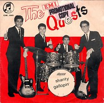The Quests [Singapore] |
Shanty |
1964 |
| 2 |
The Quests [Singapore] |
Gallopin' |
1964 |
| 3 |
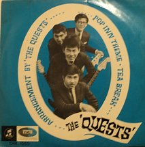The Quests [Singapore] |
Pop Inn Theme (Watch Your Step) |
1965 |
| 4 |
The Quests [Singapore] |
Tea Break |
1965 |
| 5 |
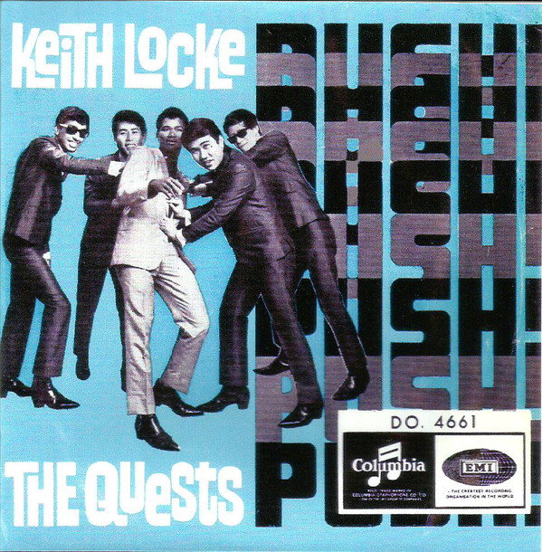Keith Locke And The Quests |
Be My Girl |
1965 |
| 6 |
Keith Locke And The Quests |
Don't PLay That Song (You Lied) |
1965 |
| 7 |
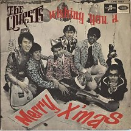Wishing You A Merry X'mas |
Jingle Bells |
1967 |
| 8 |
Wishing You A Merry X'mas |
Santa Claus Is Coming To Town |
1967 |
| 9 |
Wishing You A Merry X'mas |
White Christmas |
1967 |
| 10 |
Wishing You A Merry X'mas |
We Wish You A Merry Christmas |
1967 |
| 11 |
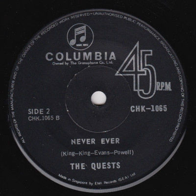The Quests [Singapore] |
Mr. Rainbow |
1967 |
| 12 |
The Quests [Singapore] |
Never Ever |
1967 |
| 13 |
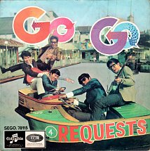Go-Go Requests |
Mustapha |
1967 |
| 14 |
Go-Go Requests |
Rose, Rose I Love You |
1967 |
| 15 |
Go-Go Requests |
Ding Dong Twist |
1967 |
| 16 |
Go-Go Requests |
Nonya Baba A Go Go |
1967 |
| 17 |
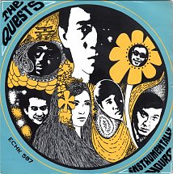Instrumentally Yours |
The Indian Maid |
1968 |
| 18 |
Instrumentally Yours |
Return Of Spring |
1968 |
| 19 |
Instrumentally Yours |
Sayonara |
1968 |
| 20 |
Instrumentally Yours |
Why Go To The Template |
1968 |
| 21 |
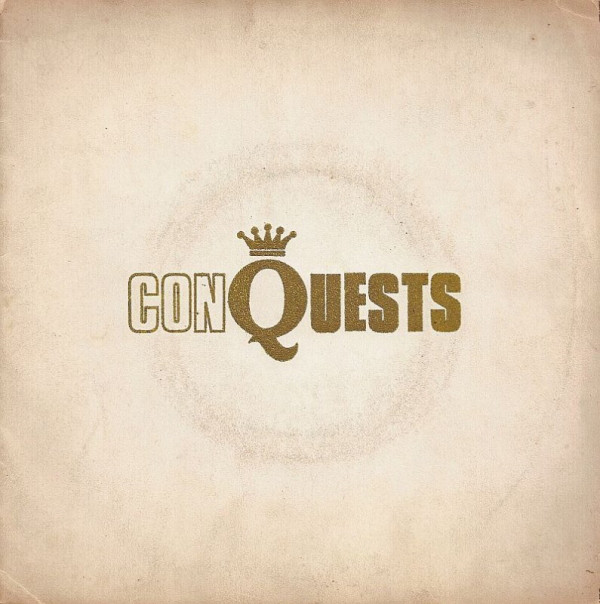Conquests |
Jesamine |
1968 |
| 22 |
Conquests |
What Is Soul |
1968 |
| 23 |
Conquests |
Sunshine Of Your Love |
1968 |
| 24 |
Conquests |
Hey Girl |
1968 |
| 25 |
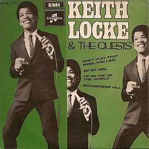Keith Locke And The Quests |
Don't Play That Song (You Lied) |
1969 (Re-released) |
| 26 |
Keith Locke And The Quests |
Be My Girl |
1969 (Re-released) |
| 27 |
Keith Locke And The Quests |
I'm On Top Of The World |
1969 |
| 28 |
Keith Locke And The Quests |
Mockingbird Hill |
1969 |
| 29 |
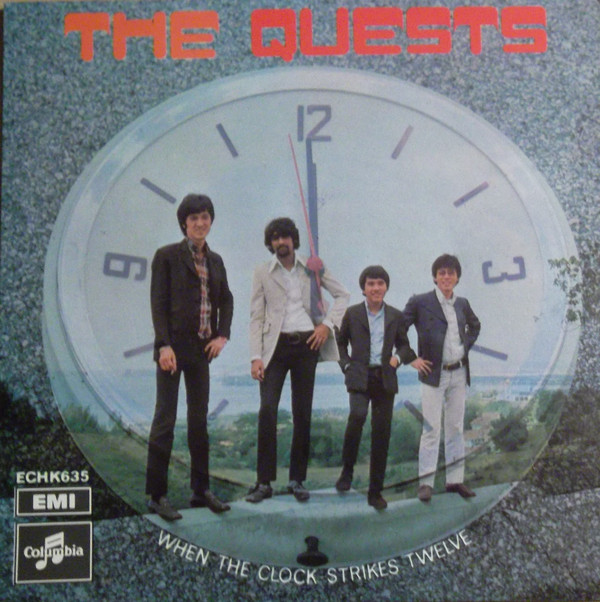When The Clock Strikes Twelve |
I'd Wait A Million Years |
1969 |
| 30 |
When The Clock Strikes Twelve |
Don't Forget To Remember |
1969 |
| 31 |
When The Clock Strikes Twelve |
Memphis Street |
1969 |
| 32 |
When The Clock Strikes Twelve |
When The Clock Strikes Twelve |
1969 |
| 33 |
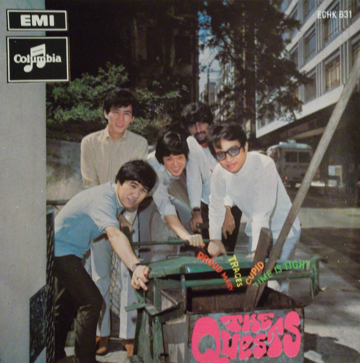Proud Marry |
Proud Mary |
1969 |
| 34 |
Proud Marry |
Time Is Tight |
1969 |
| 35 |
Proud Marry |
Cupid |
1969 |
| 36 |
Proud Marry |
Traces |
1969 |
| 37 |
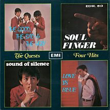Four Hits |
The Good, The Bad And The Ugly |
1969 |
| 38 |
Four Hits |
Sound Of Silence |
1969 |
| 39 |
Four Hits |
Soul Finger |
1969 |
| 40 |
Four Hits |
Love Is Blue |
1969 |
| 41 |
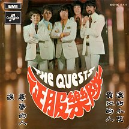 征服樂隊 |
淚 (Tears) |
1970 |
| 42 |
征服樂隊 |
負心的人 (Jilted) |
1970 |
| 42 |
征服樂隊 |
源的小花 (Flower Of Tears) |
1970 |
| 42 |
征服樂隊 |
尋夢的人 (My Lost Dream) |
1970 |